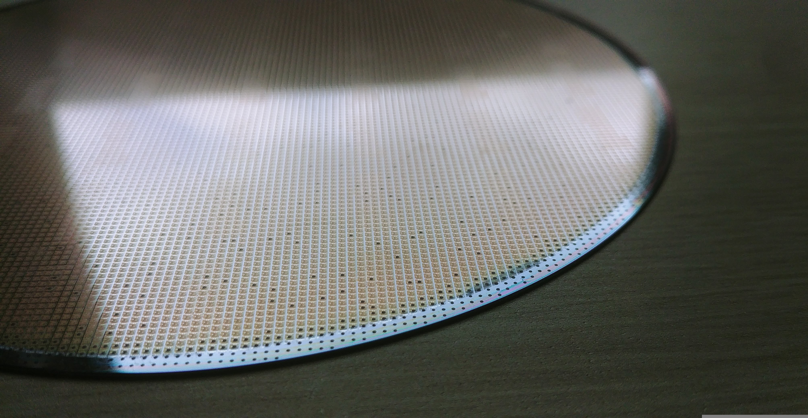
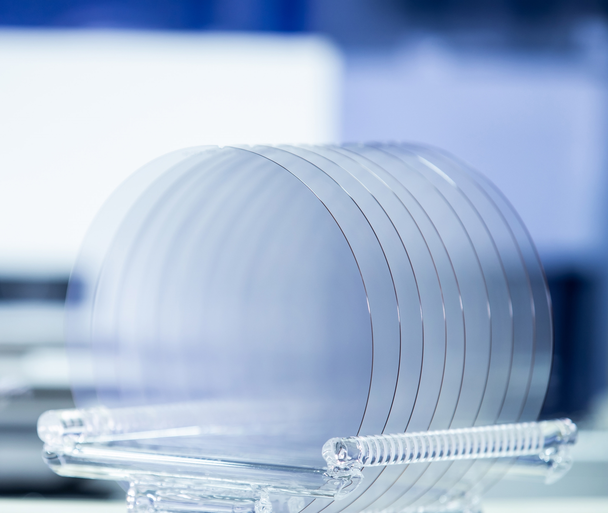
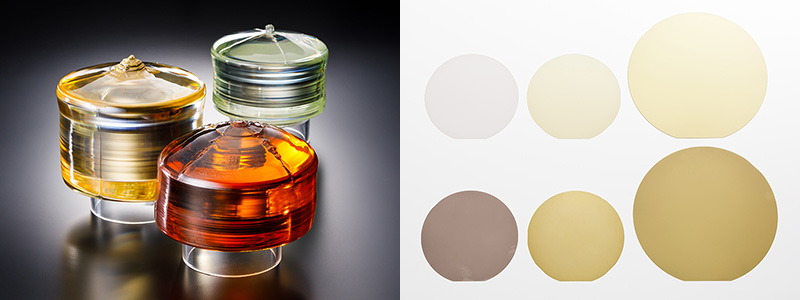
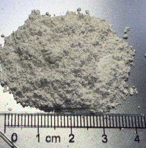
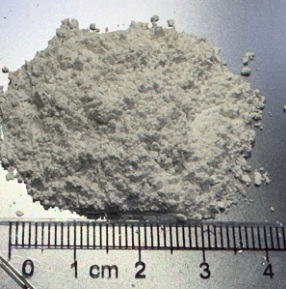

核心品項
依照製程與用途，我們將材料品項整理為 5 個類別。卡片內容為重點摘要；除「熔融石英粉」在本頁提供完整資訊外，其餘品項將以專頁呈現較完整內容。



 



矽晶圓（Silicon Wafer）
常見半導體材料，應用於積體電路、檢測/傳感器器件、MEMS、光電元件與太陽能電池等。
- 可提供：Bare Wafer / Test Wafer / Dummy Wafer
- 可依直徑與需求條件對接規格
查看內容 →
SiC 晶圓（SiC Wafer）
第三代半導體材料。可依應用需求對接不同晶圓類型與規格。
- 高純半絕緣型晶片：可用於 GaN 功率器件關鍵材料應用
- N 型晶片：SiC 電力電子器件關鍵材料應用
查看內容 →
LT / LN 晶圓（Lithium Tantalate / Niobate）
可用於 SAW filter、光學器件與熱釋電感測等應用方向，並可依直徑需求對接。
- 應用：SAW filter、Optical devices、Pyroelectric sensor
- 直徑：4" / 6" / 8"
查看內容 →
矽材料（Silicon Materials）
涵蓋多晶矽、晶柱、頭尾料與鍋底料等品項，可依用途與交付條件對接。
- Poly Silicon（多晶矽）
- Top & Tail（頭尾料）、Pot Scrap（鍋底料）、Ingot（晶柱）
查看內容 →
熔融石英粉（Fused Silica）
氧化矽的非晶態（玻璃態）材料，具高使用溫度與低熱膨脹係數特性。
- 用途：耐火材料、陶瓷/玻璃原料、精密鑄造等
- 包裝：牛皮紙袋/太空袋（依需求）
查看本頁內容 →

矽電極棒
矽電極棒主要應用於半導體乾式蝕刻（Dry Etch）製程。
在電漿反應腔中，它作為關鍵耗材負責導引電流以激發電漿。由於其材質與矽晶圓相同（Silicon），能有效避免金屬污染，確保蝕刻製程的潔淨度與晶圓良率。
查看尺寸圖 →
PECVD DLC 鍍膜
PECVD DLC 鍍膜結合高硬度與低摩擦特性，可用於降低磨耗、改善脫模性並提升零件壽命。
- 汽車：活塞銷、噴油嘴
- 精密機械：模具脫模、自動化滑軌抗磨
- 消費電子：抗刮保護層、耳機振膜強化
- 醫療/光學：人工關節、紅外線鏡頭防護
查看內容 →
熔融石英粉（Fused Silica）
熔融石英即 Fused silica，是氧化矽（石英，矽石）的非晶態（玻璃態）。它通過三維結構交叉連結提供其高使用溫度和低熱膨脹係數。
用途與應用
- 耐火材料、陶瓷原料和玻璃原料
- 精密鑄造製程（沾漿後加上一層熔融石英粉，利用低膨脹係數特性）
- 陶瓷材料製程
規格/包裝
| 外觀 | 無色透明塊狀、顆粒或白色粉末。 |
|---|---|
| 包裝 | 牛皮紙袋 25 KG；太空袋 1,000 KG。 |
| 規格 | 200 目、325 目、1200 目… |
| 應用行業 | 精密鑄造公司、陶瓷材料公司、工業化學公司、工程塑料、塗料公司。 |
洽詢前建議準備的資訊
為降低往返確認成本，建議先整理以下條件：
- 用途（耐火/陶瓷/鑄造/塗料等）
- 粒徑規格（例如：200/325/1200 目等）
- 預估用量與交期
- 包裝需求（25 KG 或 1,000 KG）
需求對接流程（建議）
材料類詢價建議以「規格 → 交付 → 驗收」三段式對齊，避免交付落差。以下為常見資訊清單（依品項可增減）。
規格（Spec）
- 品項/類型（矽晶圓、SiC、LT/LN、矽材料、熔融石英粉）
- 尺寸/等級（直徑、厚度、粒徑等）
- 用途/製程條件（若有）
交付與驗收（Delivery / Acceptance）
- 交期、批量、包裝
- 驗收方式與項目（外觀、尺寸、標示/文件等）
- 若有既有規範或內規表單，可一併提供